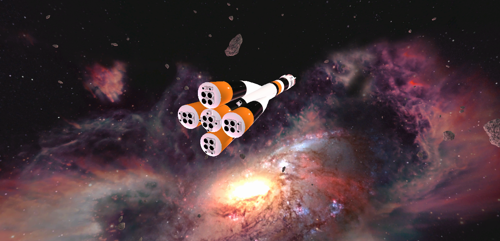
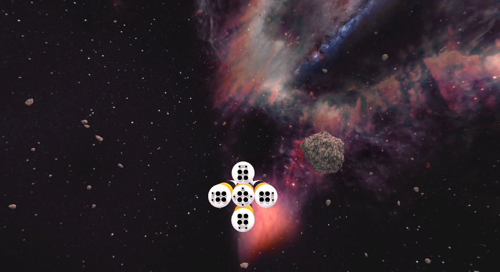
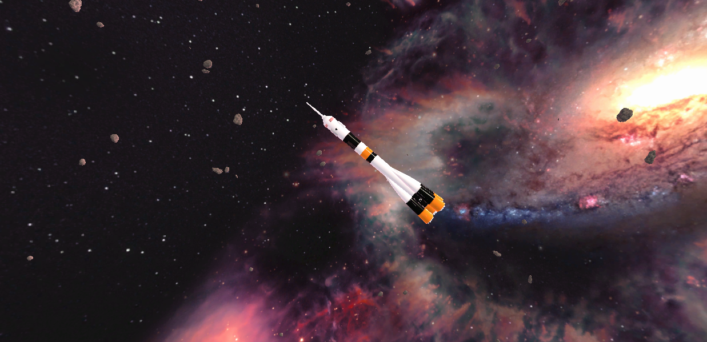
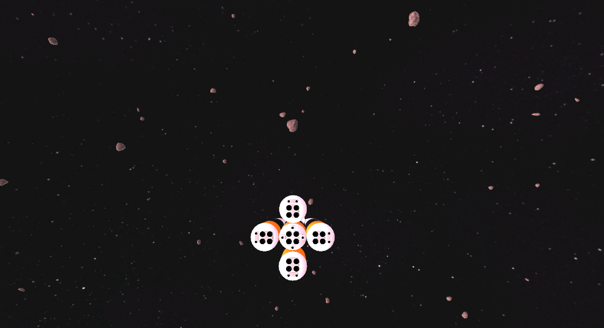

Tiimi
Daniel Sarin
Koodari, mallintaja
Tuomas Leppälahti
Koodari, mallintaja
 Kuva pelin avaruusaluksesta.
Kuva pelin avaruusaluksesta.
Spaceship
Projektin kuvaus
Projekti on Unityssä toteutettu peli, jossa pelaaja liikkuu avaruudessa. Projektin ideana oli luoda todenmukainen
nollapainovoimainen ympäristö, jossa pelaaja voi liikkua avaruusaluksella, mutta oikean maailman mukainen fysiikka
ei lopulta toteutettu sen vaikeuden ja luoman pelikokemuksen vuoksi.
Projektiin on saatu valmiiksi avaruusympäristö sekä asteroidien spawnaaminen ja liikkuminen ympäristössä. Lisäksi peliin
on implementoitu pelaajan liikkuminen eteenpäin ja taaksepäin W/S näppäimillä sekä kääntyminen käyttämällä A/D näppäimiä ja hiirtä.
Projektin aikana on ollut ongelmia kommunikaation ja aikataulun suunnittelussa, jonka takia projekti on jäänyt keskeneräiseksi.
Projektin kehittämisessä ei käytetty selkeää aikataulua ja siinä keskityttiin vääriin alueisiin. Aloittaessa, sovimme aloittamaan
avaruusaluksen ja astronauttihahmon mallinnuksesta, mutta jälkeenpäin katsoen olisi ollut fiksumpaa aloittaa pelin päämekaniikkojen
implementoinnilla ja vasta myöhemmin mallintaa objekteille mallit.
Projektin työnjako ei toiminut hyvin ja projekti päättyi siihen, että olin ainoa tiimistä, joka teki committeja projektiin. Suurin osa
käyttämästäni ajasta projektiin kului avaruusaluksen mallintamiseen, mutta ehdin myös kehittää peliympäristöä vähän.
Funktioiden kuvaus
Liikkuminen
private void Move(float horizontal)
{
if (horizontal == 0.0f)
return;
Vector3 forward = transform.TransformDirection(Vector3.forward);
Vector3 force = speed * Time.deltaTime * horizontal * forward;
rb.linearVelocity = Vector3.MoveTowards(rb.linearVelocity, force, 1.0f);
rb.AddForce(force, ForceMode.VelocityChange);
}
private void Steer(float horizontal, float vertical, float roll)
{
float deltaRotationSpeed = rotationSpeed * Time.deltaTime;
Vector3 x = -vertical * transform.TransformDirection(Vector3.right);
Vector3 y = horizontal * transform.TransformDirection(Vector3.up);
Vector3 z = roll * transform.TransformDirection(Vector3.forward);
Vector3 rotation = x + y + z;
rb.AddTorque(deltaRotationSpeed * rotation, ForceMode.VelocityChange);
}
Pelaajalla on kolme liikkumiseen liittyviä kontrolleja:
- Pelaaja pystyy kasvattamaan nopeutta eteenpäin ja taaksepäin W/S näppäimillä.
- Pelaaja pystyy kallistumaan sivulleen A/D näppäimillä.
- Lisäksi avaruusalus kääntyy pelaajan hiiren suuntaan.
Pelissä kuului aluksi olla todenmukaiset fysiikat, josta liikkuminen syntyisi, mutta lopulta päädyin käyttämään yksinkertaisempaa liikkumis-systeemiä.
Lentodynaamiikan (pitch, yaw, roll) implementointiin käytin tutoriaalia Unity Spacegame Tutorial - Movement
Pelaajan seuraaminen
[ExecuteInEditMode]
public class FollowCamera : MonoBehaviour
{
[SerializeField] private Transform target;
[SerializeField] private float speed;
[SerializeField] private Vector3 positionOffset;
[SerializeField] private Vector3 rotationOffset;
private void FixedUpdate()
{
Vector3 targetPosition = target.position + target.rotation * positionOffset;
transform.position = Vector3.Lerp(transform.position, targetPosition, speed);
Quaternion targetRotation = target.rotation * Quaternion.Euler(rotationOffset);
transform.rotation = Quaternion.Lerp(transform.rotation, targetRotation, speed);
}
}
Projekti käyttää scriptiä, joka seuraa pelaajaa tietyllä nopeudella. Halusin, että kameralla on tietyt offsetit, jotta pelaaja pystyy nähdä koko avaruusaluksen. Scripti käyttää offset arvoja, jotka lisätään pelaajan positio ja rotaatioa arvoihin, josta saadaan kameran uudet arvot, joita päin se liikkuu. Scripti suoritetaan joka frame, myös editorissa, koska scripti käyttää ExecuteInEditMode attribuuttia.
Käytin apuna scriptin kanssa StackOverflowsta löytämääni vastausta, joka liittyy aiheeseen.
Stabilisaatio
private void Stabilize()
{
rb.angularVelocity = Vector3.zero;
rb.linearDamping = 5.0f;
Invoke(nameof(ResetDamping), 2.0f);
}
private void ResetDamping()
{
rb.linearDamping = 0.0f;
}
Lisäsin pelaajan avaruusaluksen stabilisaatiomekaniikan, jonka voi aktivoida Q näppäimellä. Kun pelaaja törmää objekteja päin, avaruusalus alkaa pyöriä hallitsemattomasti ja sitä on vaikea saada takaisin haltuun. Stabilisaatio poistaa avaruusaluksen rotaatiovoimat ja vähentää liikkumisnopeutta hetkellisesti, jotta alus saadaan takaisin hallintaan.
Ongelmat ja ratkaisut
Liikkuminen / Fysiikka
Avaruusaluksen liikkumisen implementointi oli haasteellista, koska projektin tavoitteena oli luoda oikean maailman mukainen fysiikkaa simuloiva
ympäristö. Ensimmäiseksi yritin asettaa jokaiselle aluksen moottorille oman komponentin, jonka avulla ne voivat antaa alukselle nopeutta, mutta
toimia myös itsenäisesti.
Minulle tuli vastaan ongelmia, kun halusin ottaa huomioon moottorien position, jotta niiden tuottamat voimat liikuttaisivat
alusta oikeaan suuntaan. Projektin aikana en osannut tehdä tätä hyvin ja koodini alkoi muuttua hyvin monimutkaiseksi, joten päätin jättää todenmukaisen
fysiikan pois sen monimutkaisuuden ja pelin pelattavuuden takia.
Mallintaminen
Avaruusalus mallinnettiin oikean avaruusraketin mukaan, joka oli Soviet Unionin Soyuz-malli. Mallintamisen ohessa tuli vastaan
monia ongelmia, jotka pitkittivät mallintamista. Etenkin turhaittavaa oli pienien virheiden löytäminen mallista, joka aiheutti
sen, että koko malli pitää UV-unwrapata uudelleen ja mallin tekstuurit pitää asetella uuteen järjestykseen.
Pelin sisällä halusin, että jokaisessa raketin moottorissa on oma scripti, joka tuottaa voimaa aluksen liikkumiselle kun se
on päällä (tämä oli ennen kuin luovutin realistisesta fysiikasta). Tämä menetelmä ei ollut mahdollista, koska mallinnoin
aluksen yhtenä kappaleena.
Ongelman ratkaisemiseksi päädyin leikkaamaan aluksen osiin, jotta niitä voidaan referoida editorissa. Mallin paloittelu helpotti
myös mallintamista, koska sen jälkeen minun ei tarvinut UV-unwrapata koko mallia tehdäkseni muutoksia ja pystyin kopioida useasti
käytettyjä osia ja tehdä kaikkiin muutoksia muokkaamalla vain yhtä.
Pelaajan syötteet
Pelaajan syötteen lukemiseen käytettiin Unityn uutta syötesysteemiä, mutta hiiren X ja Y syötteiden lukemisen kanssa ilmeni ongelmia, joita en saanut korjattua. Ratkaisuja etsimässä löysin paljon posteja, joissa kerrotaan samoista ongelmista, mutta mikään löytämäni ratkaisu ei toiminut minun tapauksessani. Päädyin lopuksi käyttämään vanhaa systeemiä hiiren syötteiden lukemiseen pelaajalta.
// Read keyboard input
float horizontal = actions.Horizontal.ReadValue<float>();
float vertical = actions.Vertical.ReadValue<float>();
Move(horizontal);
// Read mouse input
float steerX = Input.GetAxis("Mouse X");
float steerY = Input.GetAxis("Mouse Y");
Steer(steerX, steerY, vertical);
Näyttökuvat ja valokuvat




Gameplay